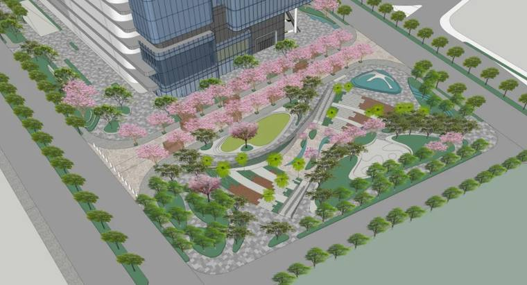

本地保存
SenseNova · Seedream 已连接
队列 1/2 · 暂停 3
视觉方向
自然光、饱和但不俗的绿。像编辑过的杂志页。
自然光高绿留白
2 小时前 · Y
客户反馈
第二版更接近了，但构图太“摆拍”，希望再随意一点，光可以更硬。
太摆拍光更硬
刚刚 · L
生成失败
请求超时 · 90s 未返回，可重试
派生 02 · 鸟瞰

派生 03 · 庭院

1 / 2 个任务 · 3 个排队×
队列第 1 张卡片的提示词，用来验…生成中 40%
取消
队列第 2 张卡片的提示词，用来验…排队 · 前面 2 个
取消
队列第 3 张卡片的提示词，用来验…排队 · 前面 3 个
取消
115%
适应
描述你想要的画面，或框选素材后说出修改
123